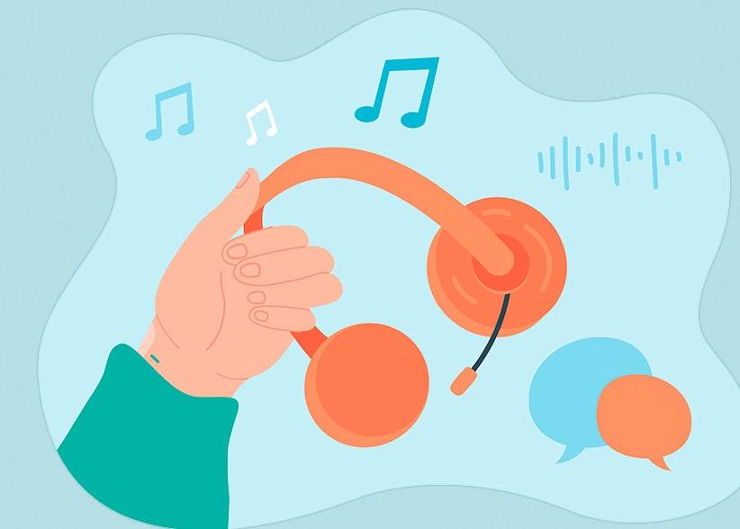
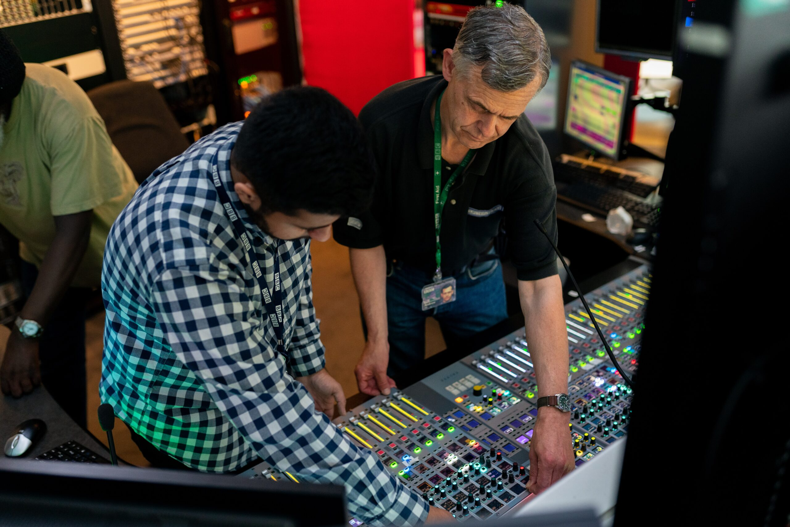

Sobre

a condição da musica em nossas vidas
"Sem música a vida seria um erro", disse Nietzsche, e para muitos é impossível discordar. Como forma de aproveitá-la, o fone de ouvido tornou-se essencial na rotina, acompanhando-nos no transporte, no trabalho ou no lazer. Entretanto, o uso excessivo em volumes elevados pode causar danos irreversíveis à audição.
De acordo com a Organização Mundial de Saúde (OMS), mais de um bilhão de jovens adultos correm o risco de sofrer perda auditiva permanente e evitável por práticas de escuta inseguras.
Fisicamente, a sensibilidade do ouvido humano varia entre o limiar da audição (0 dB) e o da dor (120 dB). Biologicamente, volumes elevados geram uma pressão sonora que destrói as células ciliadas da cóclea (responsáveis por enviar o som ao cérebro). Como essas células não se regeneram, o tempo prolongado de exposição causa danos definitivos.
Essa ameaça é negligenciada por falta de conscientização. Ignora-se a regra do 60/60: usar até 60% do volume por no máximo 60 minutos. Após esse tempo, o ouvido precisa de 45 a 60 minutos de repouso acústico para recuperar-se da fadiga sensorial. Esse descanso é vital para evitar lesões em usuários comuns e profissionais que dependem da audição no dia a dia.
Carreiras Relacionadas

Os Guardiões do Som
O Fonoaudiólogo e o Engenheiro Acústico são os pilares do nosso bem-estar sonoro, atuando de forma complementar na prevenção de tragédias auditivas.
O Fonoaudiólogo: Atua diretamente na saúde humana. Sua importância vai muito além do teste de audição; ele diagnostica disfunções precoces causadas pelo uso de fones ou ruído industrial e atua na reabilitação de trabalhadores e jovens. Ele é essencial para evitar o isolamento social que a perda da audição e da fala provoca.
O Engenheiro Acústico: Controla o perigo antes que ele chegue ao ouvido. Ele projeta o isolamento de fábricas, o conforto de escolas e a qualidade de teatros. Sem ele, a poluição sonora urbana tornaria os ambientes de trabalho insuportáveis e insalubres.
Juntos, eles unem a medicina e a física para transformar ambientes hostis em espaços seguros de convivência.
Legislação e Proteção
A Barreira Contra o Ruído
O excesso de ruído no cotidiano não é apenas um incômodo, mas um agente patogênico que causa estresse crônico, perda de concentração e surdez irreversível. Por isso, a legislação brasileira impõe regras rígidas de segurança do trabalho:
Normas Regulamentadoras (NRs): A NR-15 estabelece os limites de tolerância para ruído contínuo (como o máximo de 85 dB para 8 horas de trabalho diárias).
Ações Obrigatórias: Para proteger o trabalhador, as empresas são obrigadas a realizar o mapeamento de ruído, instalar barreiras acústicas nas máquinas e fornecer Equipamentos de Proteção Individual (EPIs), como protetores auriculares validados.
Cumprir essas leis e ouvir a orientação de fonoaudiólogos e engenheiros não é mera burocracia, mas uma garantia legal e biológica de que a produtividade não custará a saúde do trabalhador.